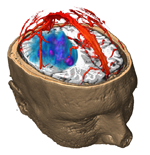

The two most relevant questions that need to be answered preoperatively are
What is the relation between the lesion, functional areas and white matter tracts?
How can the lesion be accessed most safely?
There are a number of different aspects that all relate to these guiding questions:
- How close is the tumor located to vital functional areas, such as the visual-, language- or motor-system?
- What is the distance between the tumor and the pyramidal tract (motor), the arcuate fasciculus (associated with language processing) or the nervus opticus (vision)?
- Does the tumor infiltrate or displace any of these tracts?
- To what extend or how radical may a resection be performed?
- Which arteries or veins lie on the chosen access path?
Finally, being aware of the technical limitations of the underlying MR measures, an important aspect deals with the certainty with which algorithmically derived measures may be regarded. This is especially important for DTI and fMRI. How can the remaining uncertainty be visualized effectively?
|
|